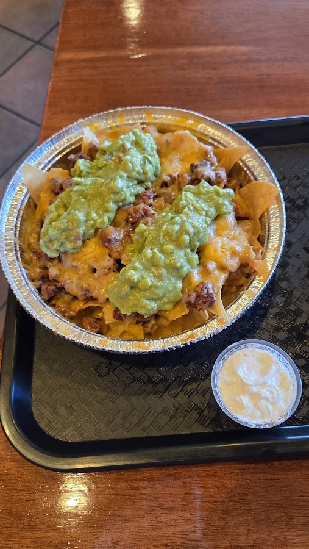
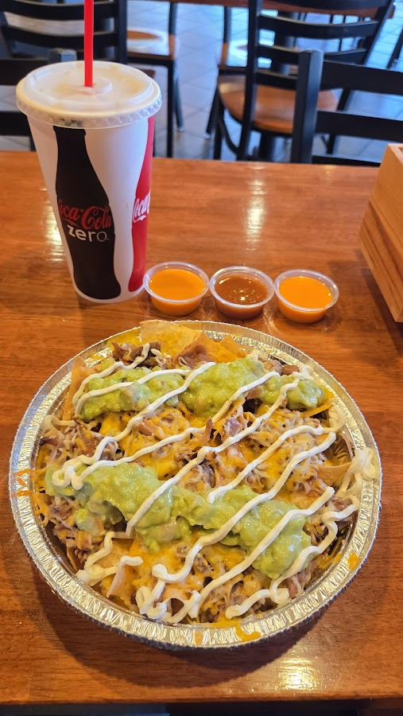

Torrance, CA · Open 7 days
Handcrafted Mexican food made with care — from loaded asada fries to stuffed burritos, baked in authenticity since day one.


Our Story
Pancho's Tacos is a neighborhood staple on Artesia Blvd in Torrance — the kind of spot where the refried beans remind you of home and the staff remembers your order. Everything is made to order and served the way it should be: warm, generous, and honest.
From loaded nachos and asada fries bursting with flavor to enchilada plates and burritos that go above and beyond, we put care into every plate. Drop in, pull up a seat, and taste the difference.
✓ Open 7 days — 7 AM to 8 PMIn Their Words
Can't rave enough about this place. Food was amazing. Asada Fries was loaded with taste and flavors. The burrito was very filling. Warm and fresh nachos taste very authentic. My son can't get enough of salsa — he loved it so much that we had to ask for extra. The pickled jalapeños and carrots went so well with chips and fries. The staff was very nice. I highly recommend this place.
I got home with my order and the lovely people put a note on my burrito saying they put guac on the side because I asked for no cilantro. Just went above and beyond to be kind. I had to call them to say thank you. We will keep coming back! Delicious burritos!
Very clean place. The food reminded me of back home in San Antonio, Texas. Only certain places have good refried beans and this is one of them. If the refried beans are great that means the whole restaurant is great. The prices are great and the portions are very generous. Very friendly staff. I'm so thankful.
I got the enchilada plate — rice and beans, carrots and jalapeños on the side with lime, sour cream and a garlic aioli sauce. I put it on my rice — so good. And the people are very friendly. Ask for Chris!
New location for Pancho's Tacos — used to be a Starbucks. Both the owners are incredibly nice and the food is great. Glad to have them in the neighborhood.
Find Us
| Monday | 7:00 AM – 8:00 PM |
| Tuesday | 7:00 AM – 8:00 PM |
| Wednesday | 7:00 AM – 8:00 PM |
| Thursday | 7:00 AM – 8:00 PM |
| Friday | 7:00 AM – 8:00 PM |
| Saturday | 7:00 AM – 8:00 PM |
| Sunday | 7:00 AM – 8:00 PM |
3931 Artesia Blvd
Torrance, CA 90504
(310) 370-3557
Open every day from 7 AM — no reservation needed, just an appetite.
Call (310) 370-3557